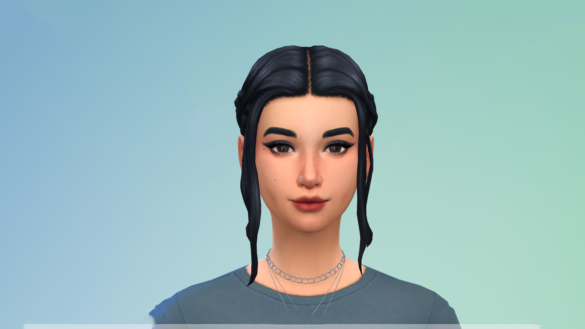

Name : Iuliana POPESCU
Background
Date of birth :
23/03/2003
Location :
Iasi, Romania
Work Place :
None
School :
Faculty of Computer Science
Technology Level :
High
Saut à la ligne
Main Points
- She takes the bus to go to college everyday
- She spends a lot of time at the library
- She has some friends on the campus and she spends a lot of time with them
- She loves drawing and playing video-games, so she would like to work in game design
Goals
-
Practical Goals :She wants to get good grades to graduate, but not spend all her time studying.Saut à la ligne
-
Personnal Goals :She wants to continue to hang out with friends, and improve her drawings.Saut à la ligne
-
Business Goals :She wants to find a topic for her bachelor thesis for next year.Saut à la ligne
Frustration and Pain Points
- There are not enough bus stations.
- The bus station in front of the university is not covered, which means that when it rains, it is not comfortable to wait for the bus.
- Bus directions are not correctly indicated at the stations.
- There are not enough signs to indicate the bus stations, it is sometimes difficult to find them.
- The last bus is at 10 pm, so she can not go back home later.
- It is very difficult to link her student account to the app to buy bus tickets, so to get the discounted rate she has to go in person to a ticket shop.
Detailed Description
"Coding is today's language of creativity. All our children desire a chance to become
creators instead consumers of computer science."
~ Maria KLAWE ~
She leaves home at 9:20 am, then waits for her bus between 5 and 15 minutes. She gets to college at 10 am. After classes, she meets her friends on the campus at the library or coffee shop, then they have to take the bus and go out in the city.
Scenario
She uses the app to find the bus station, check the direction and buy her ticket, using the "student" option.
Other Details
- She loves dogs.
- She would secretly like to drpp out of college to become a full-time professional player.